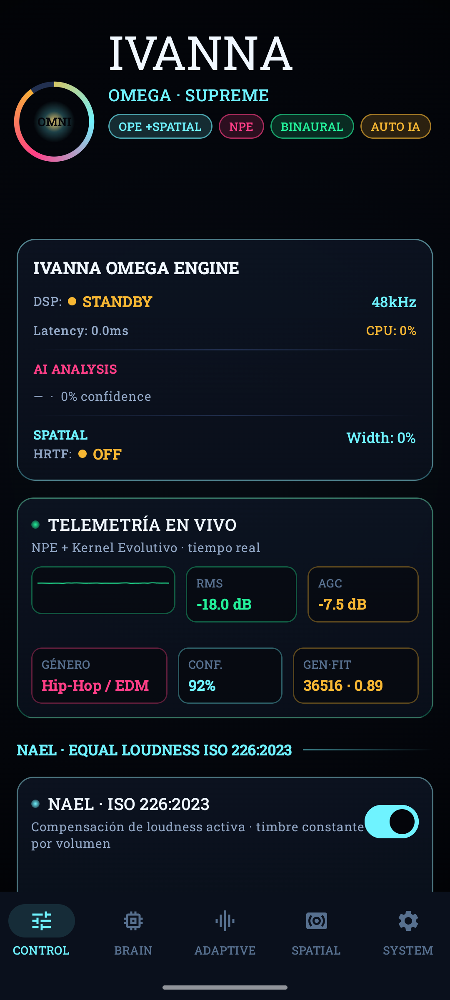
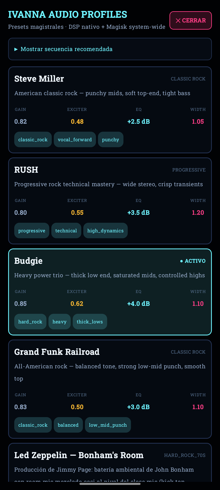
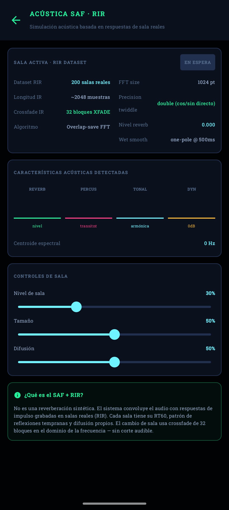
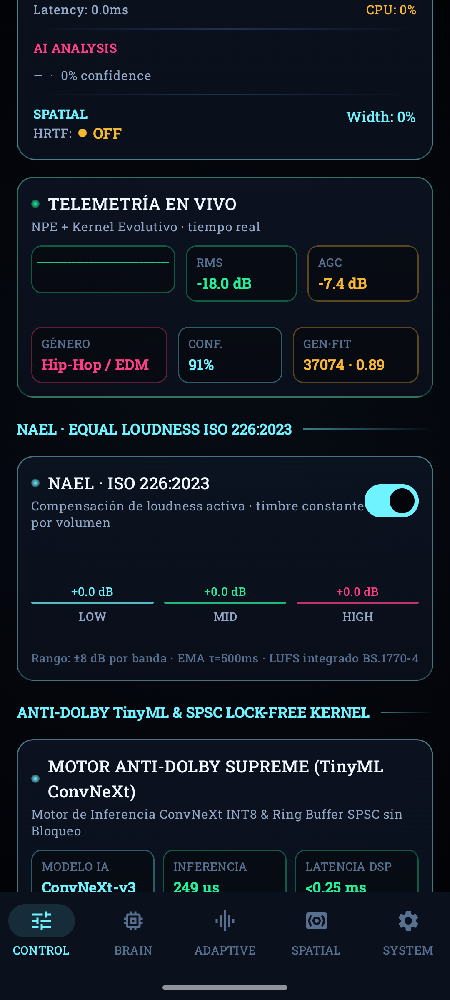

Código abierto · Android · C++20 + Kotlin
IVANNA OMEGA SUPREME
Un motor de audio para Android que trata el procesado como un solo sistema: DSP en tiempo real, HRTF binaural, salas medidas, síntesis de campo de ondas y un coordinador que mide el resultado para que ningún módulo estropee lo que otro construyó.
IVANNA OMEGA SUPREME v2.5.69
Modelo Anti-Dolby CRNN TFLite restaurado e íntegro, motor nativo C++20 ARM64 NEON, sincronía A/V cero-desfase y disponibilidad dual (APK y Módulo Magisk).
Dos rutas, según tu equipo
Ruta A — sin root
El motor procesa dentro de la app. Funciona en cualquier Android compatible, sin tocar el sistema.
Ruta B — con root (Magisk)
Un efecto en audioserver y un daemon de control procesan el audio de todo el sistema (Spotify, YouTube…).
Qué lo distingue
Coordinación en lazo cerrado
Compara el original con la salida final y mide expansión estéreo, fase, cresta y agudos para repartir cuánto aplica cada módulo.
Pensado para tiempo real
Sin reservas de memoria ni bloqueos en el hilo de audio; una puerta de CI lo verifica en cada cambio.
Honesto sobre lo verificado
Pruebas en host con ASan/UBSan, puertas estáticas y un informe que separa «medido» de «escuchado en un dispositivo».
Nada de código muerto
Las auditorías cablean de punta a punta cada control: interfaz → JNI → nativo → DSP.
Capturas




Probarlo desde el código
git clone https://github.com/luisurielpimentelperez814-design/IVANNA-OMEGA-SUPREME.git
cd IVANNA-OMEGA-SUPREME
bash scripts/run_ctest.sh # suite completa en host
for g in scripts/check_*.py; do python3 "$g"; doneContacto comercial y validación
Lo que más falta es validación en dispositivos reales. Cuéntanos qué equipo usas y qué escuchaste: reporte de dispositivo, Discussions, guía para contribuir.